COMP2870 Theoretical Foundations of Computer Science II
Root finding methods for one dimensional optimisation
A one dimensional problem
Explain why numerical methods are required for finding minima/solving nonlinear equations in one dimension
The problem
Given a smooth function \(f(x)\), the problem is to find a point \(x^*\) such that \(f(x^*) = 0\). That is, \(x^*\) is a solution of the equation \(f(x) = 0\) and is called a root of \(f\).
Remark 1. In one dimension, a local minimum occurs at a point where \(F'(x) = 0\), but not every root of \(F'\) is a minimum. The focus of this lecture is finding possible minima.
Example 1
- The linear equation \(f(x) = ax + b = 0\) has a single solution at \(x^* = \frac{-b}{a}\).
- The quadratic equation \(f(x) = a x^2 + b x + c = 0\) is nonlinear, but simple enough to have a known formula for the roots: \[ x^* = \frac{-b \pm \sqrt{b^2 - 4 a c}}{2a}. \]
- A general nonlinear equation \(f(x) = 0\) rarely has a formula like those above which can be used to calculate its roots.
It is also sometimes better to use numerical methods to solve an equation even if an exact formula exists:
- the exact formula may have difficulties due to rounding errors;
- the exact formula may be more expensive to compute.
We want to solve the quadratic equation \[ f(x) = x^2 - (m + \frac{1}{m}) x + 1 = 0, \] for large values of \(m\). The exact solutions are \(m\) and \(\frac{1}{m}\).
roots 1.0000e+08 and 1.4901e-08These values look reasonable, but let’s check the errors:
# absolute and relative errors
exact_roots = (m, 1 / m)
abs_error = (abs(roots[0] - exact_roots[0]), abs(roots[1] - exact_roots[1]))
rel_error = (abs_error[0] / m, abs_error[1] / (1 / m))
print(f"abs errors {abs_error[0]:.4e} {abs_error[1]:.4e}")
print(f"rel errors {rel_error[0]:.4e} {rel_error[1]:.4e}")abs errors 0.0000e+00 4.9012e-09
rel errors 0.0000e+00 4.9012e-01The absolute errors are quite small, but the relative error for the second root is huge - almost 50%!
Example problems
We will test our methods on the following problems.
Example 2 (Square root example) We want to find the value of the square root of 2. We can solve this by finding the (positive) root of \[ f(x) = x^2 - 2. \] This problem is interesting in that we know there are two solutions, but we only want the positive one. Our algorithms should take that into account.
Example 3 (Kepler’s equation, elliptic orbits)

Given \(e\) (eccentricity) and \(M\) (mean anomaly at a given time, in radians), find \(E^*\) (eccentric anomaly). We can write this as a root finding problem with \[ f(E) = E - e \sin(E) - M. \] We should be careful to find a solution only in \([0, 2\pi)\). In our tests we will use \(e = 0.7, M = 2.0\).
Iterative methods
Explain the idea of an iterative method
All our methods will use the idea of iteration (or iterative improvement). We saw this idea when we were using Jacobi and Gauss-Seidel iteration to solve systems of linear equations.
- Given an initial estimate of the root \(x^{(0)}\), try to generate a better approximate \(x^{(1)}\) of the root.
- Once \(x^{(1)}\) has been computed, it can be used to compute another estimate \(x^{(2)}\) in the same way (and so on…).
- Generally, \(x^{(i)}\) is used to compute \(x^{(i+1)}\) (although other previous estimates may be used as well).
There are a few issues we should consider with iterative methods:
- Does the iteration converge?
- In other words, will \(x^{(i+1)}\) be a better estimate than \(x^{(i)}\)? In what sense – e.g. \(|f(x^{(i)})|\) smaller or \(|x^{(i)} - x^*|\) smaller?
- Is there a way to check this as part of the computation? Can we prove this?
- If the iteration does converge, then how quickly does this happen?
- How should we decide when to stop the iteration?
Remark 2. We briefly comment that iteration is different to the idea of time stepping we met when solving differential equations.
The number of time steps is a given parameter when solving a differential equation but we (normally) do not know how many iterations of a root finder are needed to find a solution (for a particular stopping criterion).
Bisection method
Apply the Bisection Method and understand its properties
The first method that we introduce is the bisection method. If a function is smooth (continuous) on an interval and changes sign between the two end points (either positive to negative or negative to positive), then it must be zero some point in between.
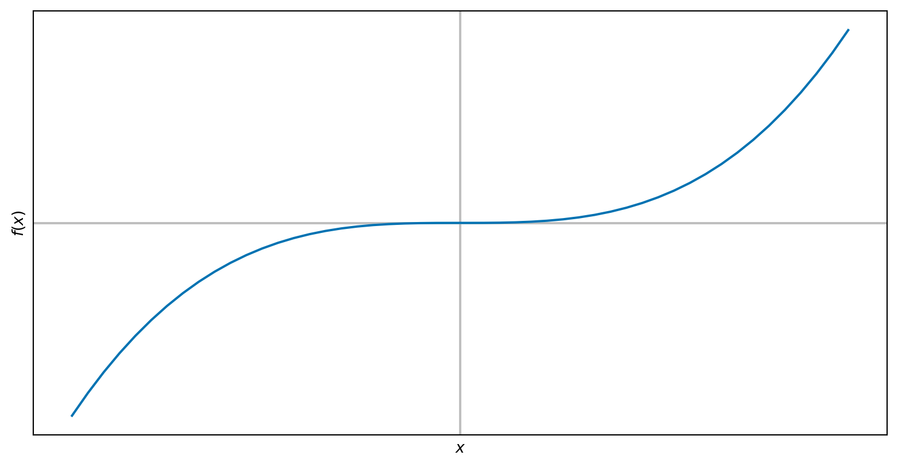
The algorithm
- Suppose we know there is a root \(x^*\) (i.e with \(f(x^*) = 0\)) between two end points \(a\) and \(b\) (we sometimes call \([a, b]\) the bracket).
- Call \(c = \frac{a + b}{2}\), then the solution is either between \(a\) and \(c\) or between \(c\) and \(b\).
- If the solution is between \(a\) and \(c\):
- then go to step 1 with the end points as \(a\) and \(c\),
- otherwise, go to step 1 with the end points \(c\) and \(b\).
We repeat this process until \(b - a < TOL\)
Convergence analysis
Assume that \(k\) steps have been taken from an initial bracket \((a, b)\). We notice that at each step, the bracket size is halved. This means after \(k\) steps, the length of the interval will be \(\frac{b - a}{2^k}\).
For large initial bracket size (i.e. large \(b - a\)) or small \(TOL\) (high accuracy requirement) \(k\) will be large.
Examples
def bisection(f, a, b, tol):
"""
Apply the bisection method for the function f on the interval (a, b)
Stop when b - a < tol
"""
# initial bracket check
assert f(a) * f(b) < 0.0, f"({a}, {b}) does not bracket the root"
data = []
# the iteration
it = 0
while b - a >= tol:
# find midpoint
c = (a + b) / 2
# update bracket
if f(a) * f(c) > 0.0:
a = c
else:
b = c
it += 1
data.append({"it": it, "a": a, "b": b, "f(a)": f(a), "f(b)": f(b)})
return data\[ f(x) = x^2 - 2. \]
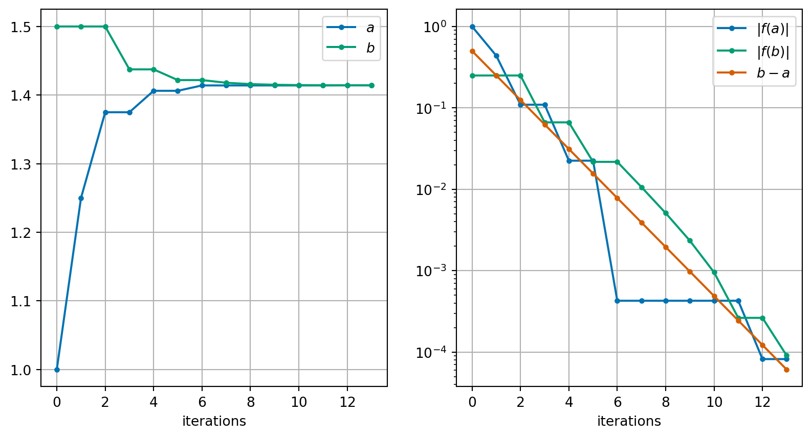
We see that it takes 14 iterations to find the solution to a tolerance of \(10^{-4}\) for the square root problem.
\[ f(x) = x - 0.7 \sin(x) - 2.0 \]
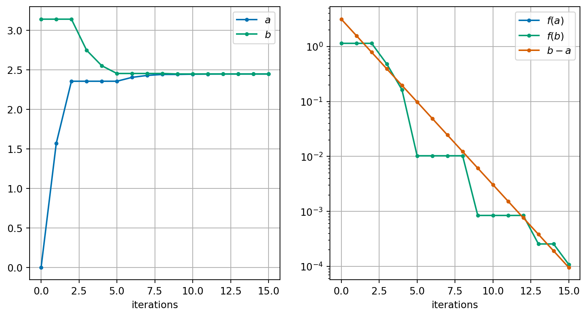
We see that it takes 16 iterations to find the solution to a tolerance of \(10^{-4}\) for the Kepler problem.
Exercise 1 For the square root problem, for which of the following brackets do you expect the algorithm to find a solution? For cases where you expect the algorithm to find a solution, how many iterations do you expect for a tolerance of \(10^{-4}\)?
- \((1.0, 1.5)\)
- \((0.0, 4.0)\)
- \((-4.0, 4.0)\)
- \((-2.0, 0.0)\)
Weaknesses of the bisection algorithm
Bisection is a reliable method for finding solutions of \(f(x) = 0\) provided an initial bracket can be found. It is far from perfect however:
- finding an initial bracket is not always easy;
- it can take a very large number of iterations to obtain an accurate answer;
- it can never find a solution of \(f(x)\) for which \(f\) does not change sign (e.g. \(f(x) = (x-1)^2\)) since we cannot find a bracket for the root!
Newton’s method
Apply Newton’s method and understand its properties.

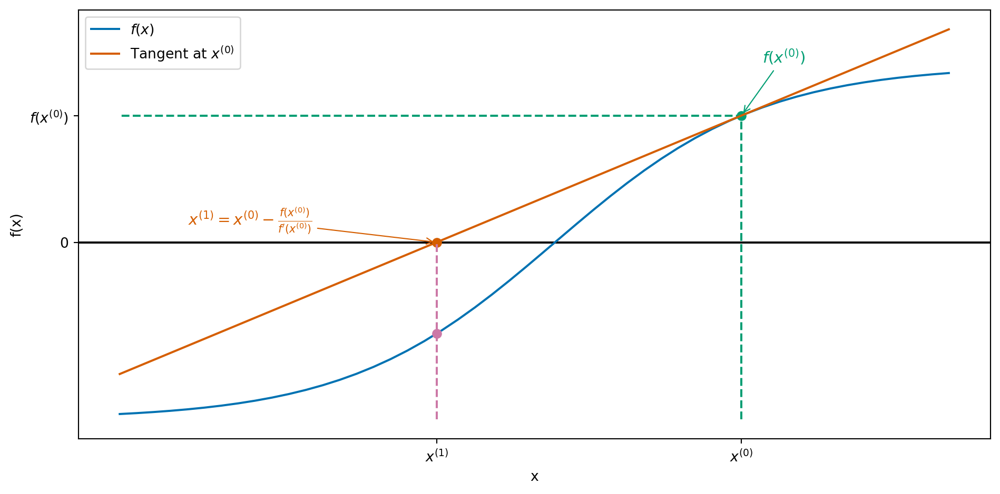
Update formula: \[ x^{(i+1)} = x^{(i)} - \frac{f(x^{(i)})}{f'(x^{(i)})}. \]
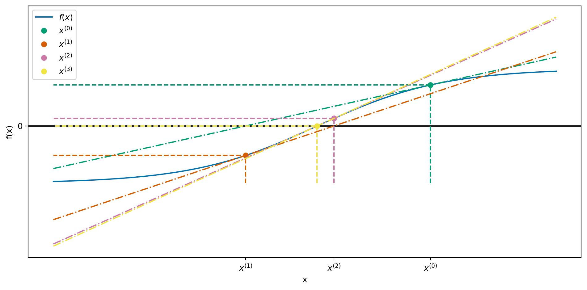
This is quite a messy plot but it appears Newton’s method converges very quickly!
Remark 3.
- The iteration formula requires an initial guess at the solution \(x^{(0)}\).
- In order to apply Newton’s method, we need to be able to compute an expression for the derivative of \(f(x)\) - this may not always be possible or easy.
- You will see a variant of Newton’s method that allows the derivative to be approximated in the lab session.
- We typically use the absolute value of \(f(x^{(i)})\) as the variable we compare against a tolerance in a stopping criteria.
Examples
def newton(f, df, x0, tol, maxiter=20):
"""
Find a root of a scalar function f using Newton's method starting at x0
"""
data = []
# the iteration
it = 0
x = x0
data.append({"it": it, "x": x, "f(x)": f(x), "f'(x)": df(x)})
while abs(f(x)) > tol and it < maxiter:
x_new = x - f(x) / df(x)
x = x_new
it += 1
data.append({"it": it, "x": x, "f(x)": f(x), "f'(x)": df(x)})
return data\[ f(x) = x^2 - 2. \]
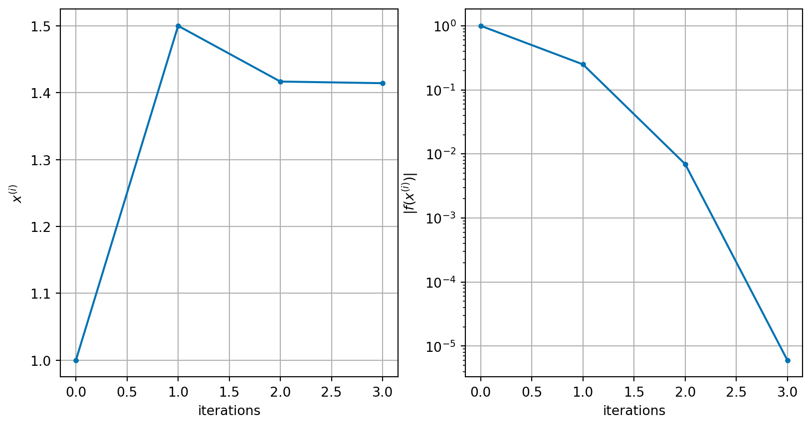
We see that it takes only 3 iterations to find the solution to a tolerance of \(10^{-4}\) for the square root problem.
\[ f(x) = x - 0.7 \sin(x) - 2.0 \]
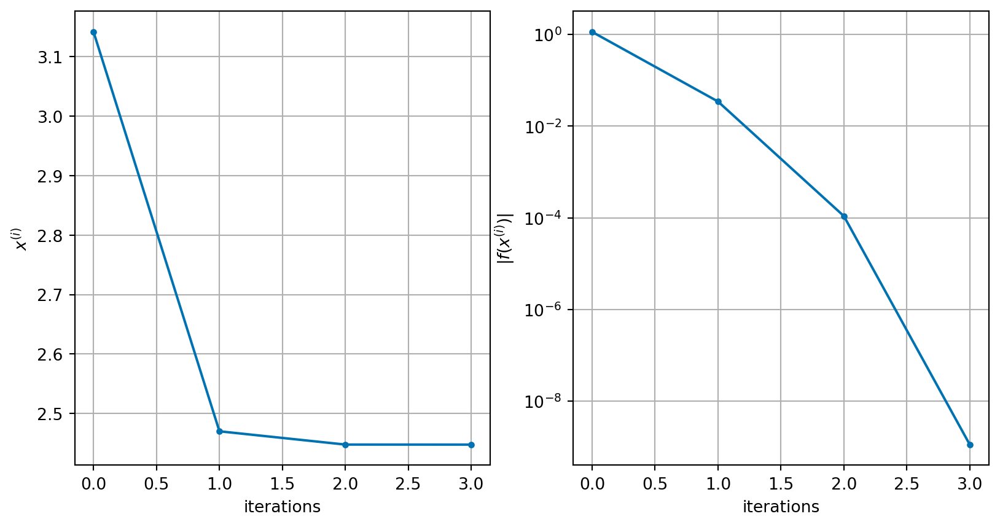
We see that it takes 3 iterations to find the solution to a tolerance of \(10^{-4}\) for the Kepler problem.
Example 4 Consider \(f(x) = x^2 - 5\) and \(x^{(0)} = 2\).
Exercise 2 Write down an expression for the Newton iteration formula for the following functions and then carry out 2 iterations using the resulting iteration and given initial value \(x^{(0)}\).
- \(f(x) = x^3 - 2x - 5\) with \(x^{(0)} = 2\).
- \(f(x) = x^3 - 2\) with \(x^{(0)} = 1\).
Challenges for Newton’s method
The first obvious challenge for Newton’s method comes from the idea that we divide by something that might be zero in our update formula – what if \(f'(x^{(i)}) = 0\)? In this case, there isn’t much we can do and Newton’s method will fail.
Example 5 Consider applying Newton’s method to the function \(f(x) = x^3 + 2x^2 + x + 1\) with \(x^{(0)} = 0\). This gives \(f'(x) = 3 x^2 + 4 x + 1\). Starting from \(x^{(0)} = 0\), we get:
Consider \(f(x) = (x-1)^2 = x^2 - 2x + 1\):
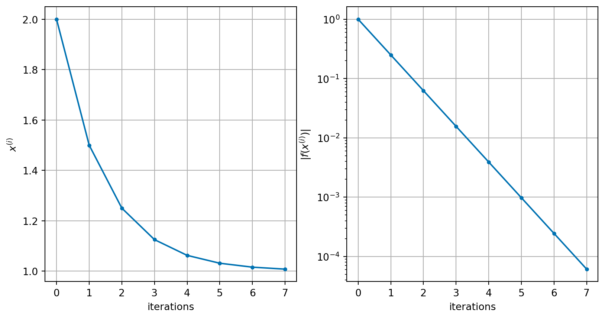
It takes 7 iterations to find the root in this case (more than the other Newton examples).
We note here also that the convergence criterion is \(|f(x^{(i)})| < TOL\) which does not guarantee that \(|x^* - x^{(i)}| < TOL\)!
Consider the function \(f(x) = x^{1/3}\). Clearly \(f\) has a root at \(x^* = 0\) (\(f(0) = 0\)).
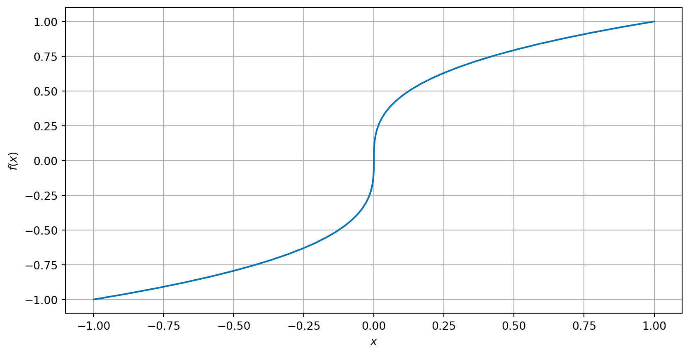
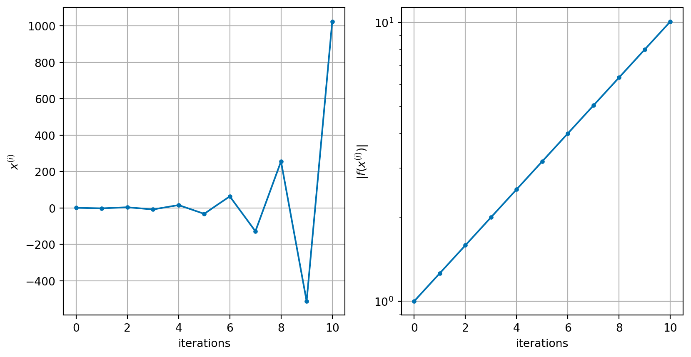
It is even possible for the iteration to simply cycle between two values repeatedly.
Example 6 Consider the function \(f(x) = x^3 - 2x + 2\). This has derivative \(f'(x) = 3 x^2 - 2\).
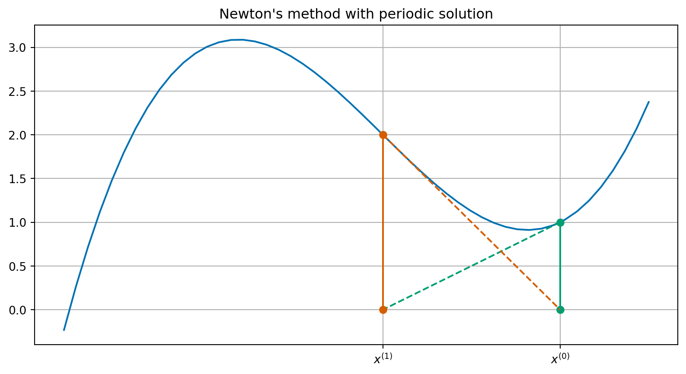
Summary
| Bisection | Newton | |
|---|---|---|
| Simple algorithm | yes | yes |
| Starting values | bracket | one |
| Iterations | lots | normally fewer |
| Convergence | with good bracket | not always |
| Turning point roots | no | slower |
| Use derivative | no | yes |
There are many more methods available – you will see more on the lab exercise sheet.